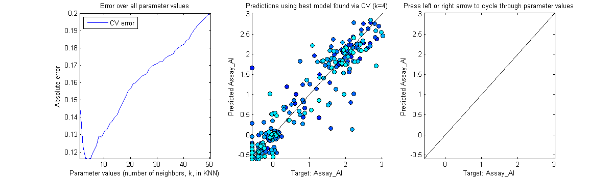

Contents
function demo_CV_KNN
Cross Validation demo
This demo shows you how to use cross validation on a machine learning algorithm to select the best parameter value for 1 algorithm parameter. In this example we will use the KNN model and its 'k' parameter - the number of neighbors to use in k Nearest Neighbors.
Author: Matthew Dirks (http://cs.ubc.ca/~mcdirks/)
Load the data
Our dataset consists of sensor readings taken of a rock, including weight, XRF, and electromagnetic sensors. The target is to predict the amount of aluminum in the rock. After loading the data we split dataset into X (features) and y (target)
load('mineral-assay.mat');
Xtrain = M(:, 1:end-1);
ytrain = M(:, end);
[N,P] = size(Xtrain);
Setup Cross Validation Options
A struct must be provided to matlearn_CV containing the various options. They are described below, starting with the mandatory options.
optionsCV = [];
Mandatory CV Options
- paramName: The name of the algorithm parameter within the model you are using (in this case, we are using KNN's 'k' parameter). Don't forget to use quotes!
- paramValues: An array of values that cross validation will test.
- model: Handle to the model object you wish to use, in this case we are using matLearn_regression_KNN_Dirks.
optionsCV.paramName = 'k';
optionsCV.paramValues = [1:1:50];
optionsCV.model = @matLearn_regression_KNN_Dirks;
Optional CV options
- nFolds: The number of cross-validation folds to perform. Must be an integer between 2 and the size of the dataset.
- leaveOneOut: Instead of specifying nFolds, you can set leaveOneOut to true in which case each sample is used once as a validation set (singleton) while the remaining samples form the training set. This is equivalent to setting nFolds to the number of samples in the data.
- shuffle: If set to true, will shuffle the data before performing cross-validation.
- loss: Name of the loss or scoring function to use. Valid options are: 'square error' and 'absolute error' for regression, and 'zero one loss' for classification tasks.
- earlyStop: If set to true, will stop searching the parameter space early if a local minima is found (see Early Stopping section below).
optionsCV.nFolds = 10;
optionsCV.leaveOneOut = false;
optionsCV.shuffle = false; % Our demo data is already shuffled
optionsCV.loss = 'absolute error';
optionsCV.earlyStop = false;
Run Cross-Validation!
matLearn_CV will return the following 4 variables:
- model: The best model found (with best parameter value already set, and X & y set to all the data you provided to matLearn_CV).
- bestParamValue: The parameter value that had the best cross-validation error.
- bestError: The the value of the error at the best parameter value.
- validationErrorLog: A struct containing: paramValues (list of parameter values as used by CV - sorted), and errorValues (cross-validation errors corresponding to paramValues).
[model, bestParamValue, bestError, validationErrorLog] = ...
matLearn_CV(Xtrain, ytrain, optionsCV);
Cross-Validation Result

Report the best parameter value and corresponding validation error
fprintf(['Best parameter value for ''k'' is %d, ' ... 'with error of %0.3f\n'], ... bestParamValue, bestError);
Best parameter value for 'k' is 4, with error of 0.116
Early Stopping
If you set optionsCV.earlyStop = true, then matLearn_CV will stop searching over the parameter values as soon as it suspects that a local minima has been found. It does this by naively checking if the error has begun to rise, after having decreased at least once in the past.
As you can see in the screenshot below, the error began to rise at k=5, so CV stopped early and returned the best parameter thus far, k=4.

Plotting
The rest of the demo code, below, is to visually show you what CV did by plotting the validation error at every parameter value, and shows you the target predictions the model would make under each value of KNN's 'k' parameter. The demo plot is interactive if you run it: press right arrow or left arrow to cycle through the predictions at each value of KNN's 'k'.
This concludes the demo - goodbye!
fig = figure('position', [0, 100, 1200,350]); %%%% PLOT ERROR subplot(1,3,1); plot(validationErrorLog.paramValues, ... validationErrorLog.errorValues, 'b'); hold on; %%%% PLOT PREDICTIONS subplot(1,3,2); hold on; modelOptions = []; modelOptions.(optionsCV.paramName) = bestParamValue; for fold = 1:1:optionsCV.nFolds [tmpX, tmpY, tmpXval, tmpYval] = ... foldData(Xtrain, ytrain, optionsCV.nFolds, fold); tmpModel = optionsCV.model(tmpX, tmpY, modelOptions); tmpYHat = tmpModel.predict(tmpModel, tmpXval); scatter(tmpYval, tmpYHat, [], 'MarkerFaceColor', ... [0,fold/optionsCV.nFolds,1], 'MarkerEdgeColor', [0,0,0]); end %%%%%% SUBPLOT FORMATTING & TITLES subplot(1,3,1); title('Error over all parameter values'); xlabel('Parameter values (number of neighbors, k, in KNN)'); ylabel('Absolute error'); errorYMax = max(validationErrorLog.errorValues); errorYMin = min(validationErrorLog.errorValues); errorXMin = min(optionsCV.paramValues); errorXMax = max(optionsCV.paramValues); ylim([errorYMin,errorYMax]); xlim([errorXMin-0.2,errorXMax+0.2]); legend('CV error','Location','northwest'); subplot(1,3,2); title(sprintf('Predictions using best model found via CV (k=%d)', ... bestParamValue)); xlabel('Target: Assay\_Al'); ylabel('Predicted Assay\_Al'); predictionsYMin = min(ytrain); predictionsYMax = max(ytrain); xlim([predictionsYMin,predictionsYMax]); ylim([predictionsYMin,predictionsYMax]); %%%%%% IDEAL subplot(1,3,2); plot([predictionsYMin, predictionsYMax], ... [predictionsYMin, predictionsYMax], 'k'); subplot(1,3,3); plot([predictionsYMin, predictionsYMax], ... [predictionsYMin, predictionsYMax], 'k'); %%%%%% ANIMATION subplot(1,3,3); xlabel('Target: Assay\_Al'); ylabel('Predicted Assay\_Al'); xlim([predictionsYMin,predictionsYMax]); ylim([predictionsYMin,predictionsYMax]); hold on; modelOptions = []; title('Press left or right arrow to cycle through parameter values'); paramIndex = 0; set(fig,'KeyPressFcn',@keyDown); function keyDown(fig, evt) if (strcmp(evt.Key, 'rightarrow')) showNext(1) end if (strcmp(evt.Key, 'leftarrow')) showNext(-1) end end h0 = NaN; h = NaN; hText = NaN; function showNext(direction) if (paramIndex ~= 0) % Reset subplot delete(h0); delete(h); delete(hText); end paramIndex = paramIndex + direction; if (paramIndex > length(validationErrorLog.paramValues)) paramIndex = 1; end if (paramIndex < 1) paramIndex = length(validationErrorLog.paramValues); end %%%% PLOT ERROR subplot(1,3,1); tmpParamValue = validationErrorLog.paramValues(paramIndex); h0 = plot([tmpParamValue, tmpParamValue], [0,8], '--k'); hText = text(0.1, 0.9, sprintf('k = %d', tmpParamValue), ... 'parent', subplot(1,3,3),'Units','Normalized'); %%%% PLOT PREDICTIONS modelOptions.(optionsCV.paramName) = ... validationErrorLog.paramValues(paramIndex); subplot(1,3,3); h = []; for fold = 1:1:optionsCV.nFolds [tmpX, tmpY, tmpXval, tmpYval] = ... foldData(Xtrain, ytrain, optionsCV.nFolds, fold); tmpModel = optionsCV.model(tmpX, tmpY, modelOptions); tmpYHat = tmpModel.predict(tmpModel, tmpXval); h(fold) = scatter(tmpYval, tmpYHat, [], 'MarkerFaceColor', ... [0,fold/optionsCV.nFolds,1], 'MarkerEdgeColor', [0,0,0]); end end % This function copied from matLearn_CV.m -- for demo purposes only. function [Xtrain, ytrain, Xval, yval] = foldData(X, y, nFolds, fold) % nFolds: total number of folds % fold: which fold to perform n = size(y,1); % calculate number of samples per fold % (except the last fold will take all remaining rows): nPerFold = floor(n/nFolds); % Create validation set valStart = (fold-1)*nPerFold + 1; if (fold == nFolds) valEnd = n; else valEnd = fold*nPerFold; end yval = y(valStart:valEnd); Xval = X(valStart:valEnd, :); % Training set may consist of 2 parts: the part before the validation % set, and the part after. if (fold == 1) trainStart = valEnd + 1; trainEnd = n; ytrain = y(trainStart:trainEnd); Xtrain = X(trainStart:trainEnd, :); elseif (fold == nFolds) trainStart = 1; trainEnd = valStart - 1; ytrain = y(trainStart:trainEnd); Xtrain = X(trainStart:trainEnd, :); else % expect 2 parts, because fold must be in the middle trainStartA = 1; trainEndA = valStart - 1; trainStartB = valEnd + 1; trainEndB = n; ytrain = [ y(trainStartA:trainEndA); y(trainStartB:trainEndB) ]; Xtrain = [ X(trainStartA:trainEndA, :); X(trainStartB:trainEndB, :) ]; end end
end